Практичні курси · журнал «ДентАрт» 2022 №4
Просторові орієнтири в системній реставрації зубів
Spatial landmarks in systematic restoration of teeth
У системній реставрації зубів важливо мати надійні просторові орієнтири, за якими можна відтворити первинну анатомічну форму зубів. За коректним відновленням анатомічної форми кожного із зубів за певним системним алгоритмом ідуть відновлення зубних рядів і прикусу в первинному вертикальному розмірі і рухах, нормалізація оклюзії і балансу жувальних м’язів, оптимізація позиції головок у суглобах і постури в цілому.
У прямій реставрації зубів у довільній техніці провідними просторовими орієнтирами є розміри і форма коронки зуба, зовнішня поверхня збереженої емалі, шийка зуба, топографія зубних тканин (дентино-емалеве з’єднання і порожнина зуба). У непрямій реставрації в зубах, відпрепарованих під незнімні конструкції, відсутні певні просторові орієнтири, тому для лабораторного моделювання зубів і прикусу провідними просторовими орієнтирами є позиція головок у суглобах і рухи нижньої щелепи з моделюванням зубів в артикуляторі. Для обох підходів у визначенні прикусу (через анатомічну форму зубів і позицію нижньої щелепи) результатом має стати функціональна оклюзія з усіма притаманними їй ознаками.
Зуби правильної анатомічної форми є первинними і утворюють прикус, який є вторинним. Так само вторинними функціонально-анатомічними утвореннями є позиція суглобових головок у скронево-нижньощелепних суглобах, баланс жувальних м’язів і постура, збалансована позиція тіла.
Втрата зубних тканин і зубів через патологію призводить до порушення прикусу, суглобів, м’язового балансу і постури, а відтак відновлення зубних тканин і зубів у первинній анатомічній формі нормалізує всі вторинні функціонально-анатомічні утворення.
Таким чином, так звана висота прикусу, або вертикальний розмір оклюзії (vertical dimension of occlusion – VDO), утворюється вторинно і визначається, коли верхні і нижні бокові зуби первинної анатомічної форми контактують між собою опорними горбиками. Тобто, щоб знайти початкову висоту прикусу, треба повернути опорним зубам втрачену анатомічну форму, і тоді решта перерахованих функціонально-анатомічних утворень будуть знайдені автоматично!
Просторові орієнтири втраченої анатомічної форми зубів
Для відновлення втраченої анатомічної форми зубів мало знати й повторити типові елементи анатомічної форми реставрованих зубів, для її відтворення необхідні просторові орієнтири, які можна розділити на локальні і загальні.
До локальних просторових орієнтирів ми відносимо топографію дентино-емалевого з’єднання, топографію порожнини зуба, оточеної предентином, шийку зуба і зовнішню поверхню збереженої емалі.
До загальних просторових орієнтирів, що стосуються ритміки зубів у зубному ряду, ми відносимо форму вестибулярних, оральних і контактних поверхонь зубів у зубному ряду, позицію крайових валиків, горбиків і фісур, співвідношення висоти передніх зубів, особливо верхніх, множинний контакт між зубами, оклюзійну форму зубних рядів (крива Шпеє), функціональні позиції оклюзії і шляхи ведення тощо.
У непрямій реставрації зубів, коли відновлювані зуби відпрепаровані під незнімні конструкції, відсутні такі локальні просторові орієнтири, як зовнішня поверхня неушкодженої емалі, на робочій моделі не визначається дентино-емалеве з’єднання, і тому лабораторне моделювання зубів і прикусу робиться в артикуляторі за загальними просторовими орієнтирами.
У прямій реставрації зубів можна легко виявити дентино-емалеве з’єднання, за ним і шийкою зуба визначити втрачені зовнішні контури емалі і поєднати їх з анатомічною формою реставрованого зуба. Дуже важливий локальний просторовий орієнтир: в усіх зубах дентин топографічно по вертикалі не виходить за межі шийки зуба! Тому, маючи шийку зуба як локальний просторовий орієнтир, треба просто відбудувати дентин строго вертикально від шийки, тоді отримана поверхня буде віднайденим дентино-емалевим з’єднанням, а додавши композит на товщину емалі, отримаємо втрачену зовнішню поверхню коронки зуба… Екватор коронки зуба утворюється виключно за рахунок емалі!
Види прямої техніки реставрації зубів
Для відновлення анатомічної форми зубів і прикусу у прямій реставрації використовують кілька технік: вільна техніка, молдинг техніка, шелл техніка, техніка повної дуги.7,8
Вільна техніка (free hand restoration) передбачає довільне відновлення анатомічної форми зубів, що потребує від стоматолога, крім знань, добре відтренованих навичок, відчуття форми і відповідного таланту. І це єдина техніка, для якої моделювання зубів і прикусу в артикуляторі може бути використано лише як візуальний зразок.10,12
Техніка молдингу (molding technique) передбачає моделювання зубів і прикусу в артикуляторі, відновлення по шаблонах оральних і вестибулярних поверхонь зубів у кожному секстанті окремо. Отримавши зовнішні поверхні зубів з позиціонованими горбиками, можна легко відтворити контактні і оклюзійні поверхні у вільній техніці.6,9
Шелл техніка (shell technique) і техніка повної дуги (full arc technique) передбачають виготовлення об’ємних силіконових шаблонів на окремий секстант і на весь зубний ряд з одномоментною реставрацією всіх зубів.6,11
Усі перераховані техніки, крім вільної, вимагають проведення адгезивних процедур на кілька зубів або на всі зуби одночасно, що ставить під питання досягнення якісної адгезії реставраційних матеріалів до зубних тканин.
Клінічний приклад заміни композитних реставрацій
На консультацію звернулася пацієнтка, 48 років, з тотальним відновленням композитом усіх зубів і прикусу, яке було проведене 8 років тому з приводу стирання зубів. Непоганий результат відновлення при відсутності скарг на функціональні порушення, і кожен стоматолог має право на свої авторські особливості у формі реставрованих зубів, головне, щоб оклюзія була функціональною. Коли від пацієнтів є запит заміни реставрацій з добрих на кращі, стоматологу завжди варто очікувати, що він може стати просто наступним у черзі… Тому слід проаналізувати анатомічну форму реставрованих зубів і прикусу!
Вигляд зубів, реставрованих композитом, на час звернення.
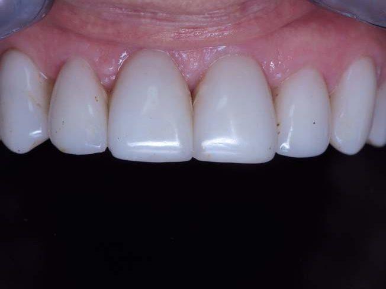
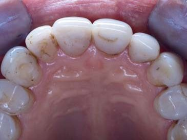
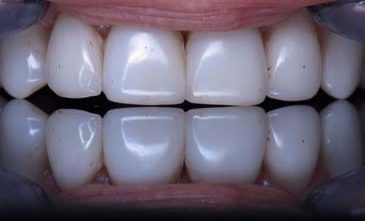
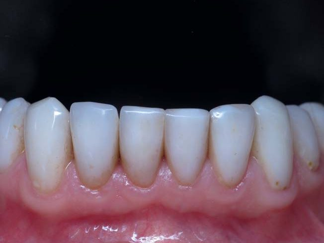
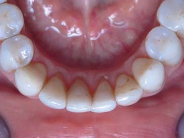
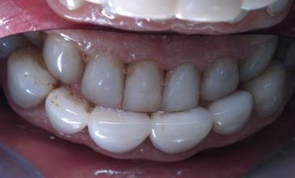
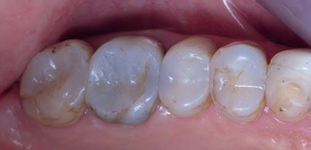
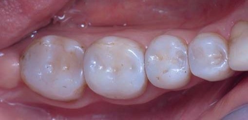
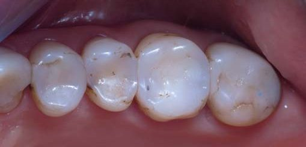
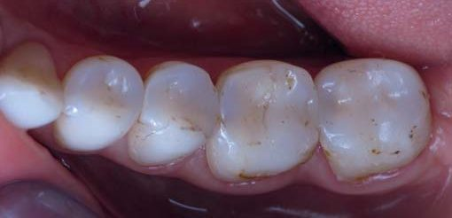
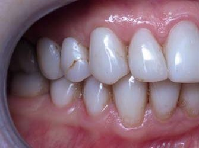
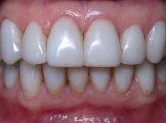
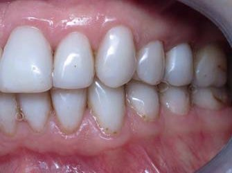
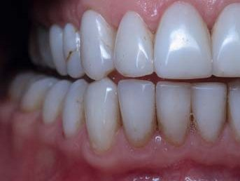
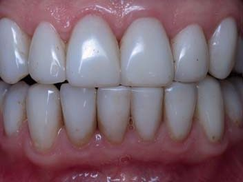
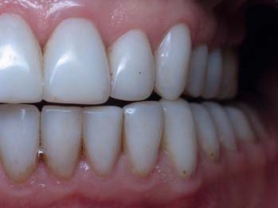
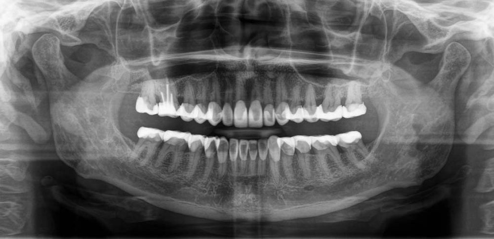
В анатомічній формі верхніх і нижніх передніх зубів можна звернути увагу на товщину ріжучих країв різців, які занадто товсті (стандартна товщина ріжучих країв має бути 1,3 мм в межах 1 мм від краю і визначається кронциркулем…). Такими ріжучими краями зручно жувати, але важко відкушувати, що є головною функцією цих функціонально активних зубів. Потовщені реставровані зуби, як правило, є результатом реалізації запиту пацієнтів на зміну кольору зубів з нормального на «театральний», і штучний колір зубів тоді досягається шляхом тотального покриття зубів вінірами.
Добре видно, що анатомічна форма бокових зубів має суттєві недоліки: пласка жувальна поверхня при візуально достатній висоті коронок, відсутні ребра горбиків, які мають забезпечувати жувальну ефективність і позиціонування нижньої щелепи. Така форма жувальної поверхні може бути і результатом стирання реставрацій за відсутності користування захисними капами.
Прикус демонструє асиметричне співвідношення зубів: фісурно-горбикове співвідношення зубів справа і горбикове співвідношення зубів зліва зі зміщенням штучної середньої лінії нижнього зубного ряду ліворуч. Функціональні позиції прикусу демонструють правильне співвідношення зубів, а панорамна рентгенограма – багато-багато композиту.
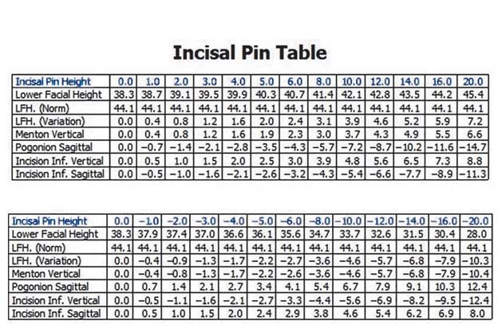
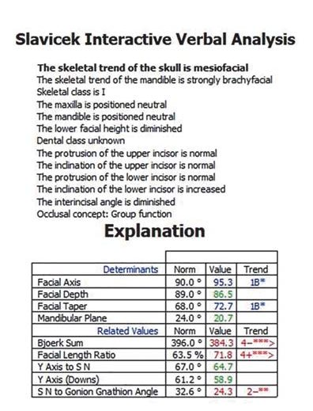
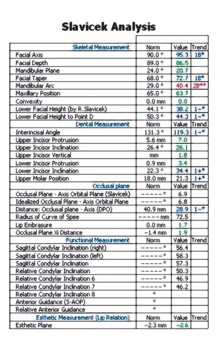
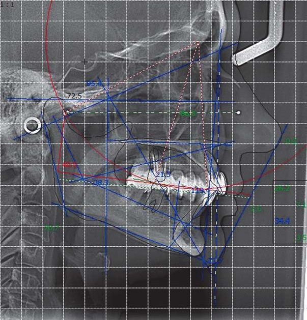
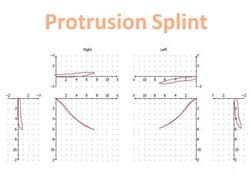
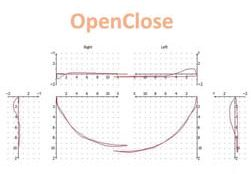
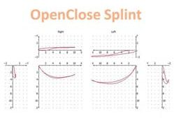
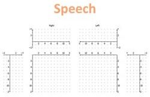
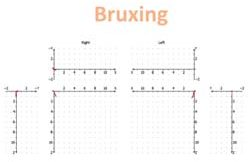
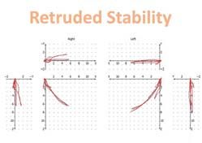
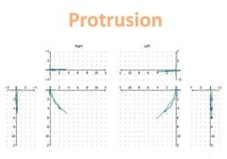
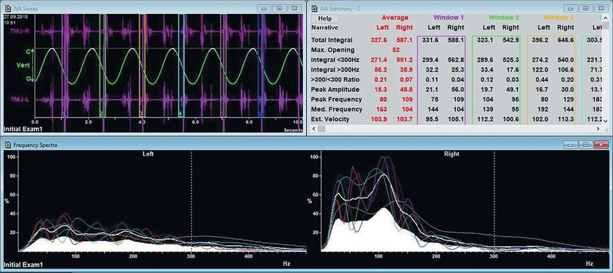
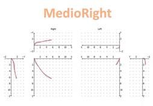
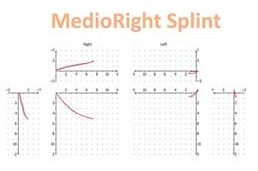
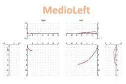
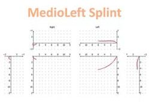
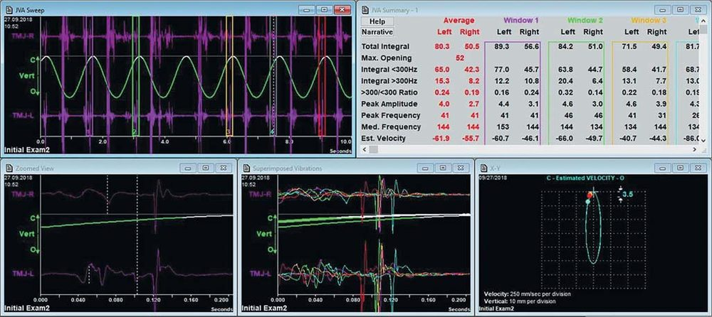
Діагностика прикусу за Славічеком.
За відсутності природних орієнтирів для досягнення анатомічної форми зубів варто направляти пацієнтку на функціональне обстеження у сподіванні, що там вона і залишиться...
Висновки обстеження за Славічеком5 (ІПСТ, лікар Світлана Федоренко) невтішні:
- «Хронічний генералізований пародонтит ІІ ступеня важкості, стадія загострення.
- Множинні рецесії в ділянці зубів 17, 16, 27, 26, 11, 21, 31, 37, 41, 42, 43, 46, 47.
- Вторинний карієс в ділянці зубів 17, 16, 15, 14, 11, 21, 23, 25, 26, 27, 36, 46.
- Патологічна стертість зубів.
- Скелетно І клас з тенденцією до ІІ класу за рахунок ретроположення нижньої щелепи. Зниження вертикальних розмірів оклюзії.
- М’язово-суглобова дисфункція».
Слід пам’ятати, що первинне обстеження завжди має на меті показати гірший стан зубів і прикусу, ніж, можливо, є насправді.
Воскове моделювання зубів.
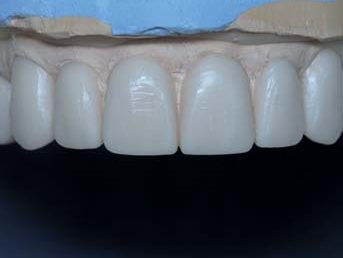
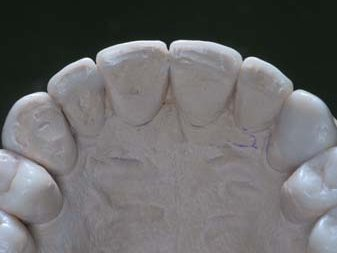
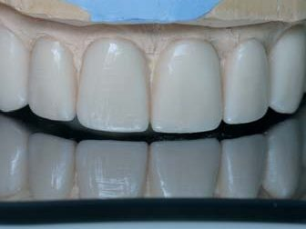
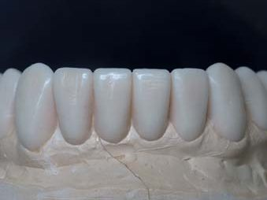
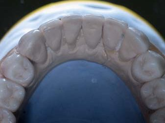
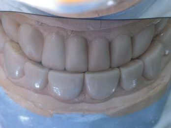
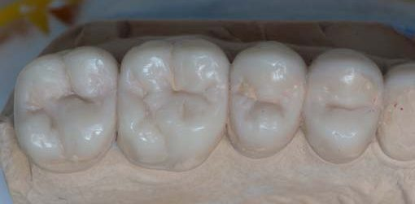
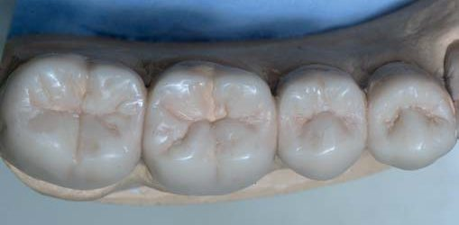
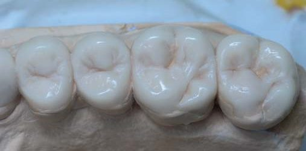
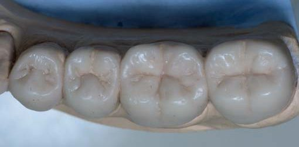
Вимога провести воскове моделювання зубів і прикусу є наступним кроком у сподіванні, що ця системна реставрація зубів і прикусу за відсутності природних орієнтирів омине нас…
Ми отримали результат воскового моделювання зубів і прикусу в артикуляторі за Славічеком5 (зазвичай клініка, в якій робилося воскове моделювання, не може позичити той самий артикулятор, і доводиться задовольнитися лише окремими моделями без можливості перевірки функціональних позицій оклюзії). Для техніка відсутні багато природних орієнтирів: не видно шийок зубів, не визначається дентино-емалеве з’єднання. Тому налаштований артикулятор – єдина можливість віднайти первинну форму зубів через прикус і скронево-нижньощелепні суглоби!
Воскове моделювання виконано професійно (ІПСТ, технік Володимир Антипчук): ріжучі краї і співвідношення різців у межах анатомічної норми (зі збереженням зміщення нижньої центральної лінії ліворуч), жувальні поверхні бокових зубів виглядають бездоганно (особливо вражає виражена Crista Obliqua на верхніх перших молярах, яка в поєднанні з дистальним щічним горбиком нижніх перших молярів повинна протистояти дисталізації нижньої щелепи). Щоправда, верхні центральні різці не дотягують до площини оклюзійного дзеркала, встановленого на верхні премоляри...
Композитне моделювання зубів.
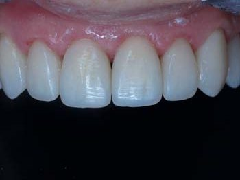
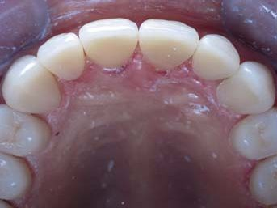
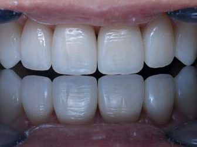
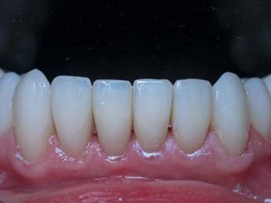
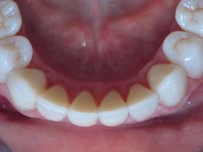
На серії фотографій, ідентичній фотографіям воскового моделювання, видно безпосередні результати прямої реставрації зубів, виконаної за просторовими орієнтирами, такими як шийка зуба і дентино-емалеве з’єднання, відкритими після усунення попередніх реставрацій. Завдяки відкритим просторовим орієнтирам реставрації виконані у вільній техніці без використання шаблонів!
Заміна композитних реставрацій виконана протягом двох реставраційних сесій за звичним алгоритмом.1,2
Протягом першої реставраційної сесії замінено реставрації на всіх верхніх зубах у послідовності: ікла, бокові зуби справа і зліва, різці. Контроль над оклюзією полягав у симетричності іклів і премолярів за допомогою оклюзійного дзеркала, максимальних контактах верхніх молярів з нижніми, які слугували за прикусний шаблон, і дотриманні співвідношення по центральній лінії.
Під час другої реставраційної сесії замінено реставрації на всіх нижніх зубах у послідовності: бокові зуби справа і зліва, ікла та різці. Контроль над оклюзією полягав у дотриманні співвідношення по центральній лінії, максимальних контактах опорних горбиків і відсутності контактів на направляючих горбиках і на зовнішній поверхні опорних горбиків при частому змиканні зубів у центральному співвідношенні.
Заміна реставрацій у верхніх зубах
Приклади використання просторових орієнтирів при заміні реставрацій у верхніх зубах.
Верхні ікла відновлюються за алгоритмом першим кроком. Після видалення композиту попередньої реставрації в зубі 13 повністю «читається» лише шийка зуба. Штучний дентин був побудований вертикально від шийки, і в такий спосіб було віднайдено відсутнє дентино-емалеве з’єднання.
У зубі 17 як просторові орієнтири використані шийка зуба і оральна поверхня зовнішньої емалі. Вестибулярна поверхня відбудована від шийки зуба, орієнтуючись на контур вестибулярної поверхні першого моляра.
Для відбудови зуба 16 після ендодонтичного переліковування як просторові орієнтири використані шийка зуба і контури оральної та вестибулярної поверхонь сусідніх зубів. Видно, що попередньо були відбудовані премоляри. Із завершенням побудови всього секстанту зубного ряду було перевірено змикання всіх правих верхніх зубів з нижніми.
Відновлення зуба 21 було завершальним у першій реставраційній сесії, коли вже визначаються просторові орієнтири не тільки зубних тканин самого зуба, а й усього зубного ряду. Для досягнення кольору реставрованого зуба яскравим опаковим відтінком композиту були відтворені контури предентину, втрачені через ураження карієсом контактних поверхонь і наступні реставрації.
Заміна реставрацій у нижніх зубах
Приклади використання просторових орієнтирів при заміні реставрацій у нижніх зубах.
Як орієнтири при відбудові коронки зуба 46 були використані шийка зуба, оральна поверхня зовнішньої емалі разом із збереженою висотою оральних горбиків, а також контур вестибулярної поверхні коронок сусідніх зубів. При побудові контактних поверхонь асиметричність забезпечили вертикально встановлені клинці різного розміру (контактний пункт має бути зміщений вестибулярно).
Після видалення попередньої реставрації в зубі 37 довелось орієнтуватися лише на шийку зуба і ритміку зубів у секстанті. Після побудови реставрації до етапу дефекту класу I був знятий рабердам, і після 45-хвилинної перерви (для усунення дисталізації нижньої щелепи внаслідок тривалого перебування в кріслі) горбики були перевірені в оклюзії, а жувальна поверхня добудована після повторної ізоляції.
Відбудова зуба 43 демонструє наявність суцільного дебондингу, і це не лише виявлена вагома причина заміни попередніх реставрацій, але й зменшення ушкоджень природних зубних тканин, тому що в такому випадку достатньо поверхневого механічного препарування.
У завершальній відбудові центральних різців орієнтирами були шийки зубів і розраховані мезіо-дистальні розміри коронок, дотримані за допомогою штангенциркуля.
Вигляд зубів, реставрованих композитом, через місяць після завершення відновлення.
Згідно з алгоритмом системного відновлення анатомічної форми всіх зубів, останнє робоче відвідування клініки має бути приблизно через місяць. Мета цього відвідування полягає у повторенні початкової діагностики і прецизійної корекції оклюзії під контролем синхроелектроміографії. Ці діагностичні процедури неможливо виконати безпосередньо після завершення реставрації нижніх різців, оскільки настає певна дезорієнтація в рефлексах і потрібен певний час для адаптації організму до нової ситуації з прикусом.
У цьому клінічному випадку через місяць після завершення системного відновлення зубів також була проведена повторна діагностика стану прикусу за Славічеком5 у тій же клініці ІПСТ і тим же лікарем Світланою Федоренко, що і до нашого втручання.
Висновок після повторного обстеження цілком оптимістичний:
- «Стабільні множинні контакти в позиції інтеркуспідації.
- Іклове ведення при ексцентричному веденні.
- М’язи мають рівномірний тонус, безболісні.
- При запису рухів нижньої щелепи добра якість треків, початок і кінець рухів співпадають.
- Стабільний центрик».
Відразу після реставрації пацієнти зобов’язані користуватися капами, які ізолюють верхні і нижні зуби між собою на час стискання зубів внаслідок реакції на стрес. Зазвичай спочатку виготовляємо три капи: нічну (night guard), денну (day guard) і запасну, проте за потреби їх кількість може бути збільшена.
Вигляд зубів, реставрованих композитом, через три роки після відновлення.
Три роки – це термін завершення гарантії нашої клініки, два з яких покриваються страхуванням лікарських ризиків. Клінічно трирічний термін демонструє перші результати експлуатації реставрованих зубів і прикусу, динаміку зношування оклюзійних поверхонь, яка залежить від вираженості парафункцій, рівня стресу і акуратності в користуванні захисними капами.
Стан реставрованих зубів і прикусу візуально задовільний, блискуча поверхня композиту вказує на правильне користування гігієнічними зубними пастами, що очищають і полірують. Сколи та розшарування композиту відсутні. Стан ясенного краю навколо реставрованих зубів задовільний.
Оклюзійні поверхні бокових зубів дещо вигладжені зліва через горбикові контакти. Середня лінія в центральному співвідношенні зміщена ліворуч, але співвідношення іклів симетричні. Функціонально-активні позиції оклюзії в нормі і демонструють ізольовані контакти верхніх центральних різців та іклів.
На панорамній рентгенограмі, як і до системної заміни реставрацій, багато рентгенконтрастного композиту, періапікальні тканини девітального зуба 16 без змін, відсутні сходинки в приляганні композиту по шийках на контактних поверхнях зубів.
Перші довгострокові результати стану зубів і прикусу засвідчують, що системна заміна реставрацій з дебондингом три роки тому у вільній техніці пройшла цілком успішно, і цього допомогли досягти просторові орієнтири.
Висновки
Поданий клінічний приклад демонструє, як за відсутності загальних просторових орієнтирів або невпевненості в них можна відновити зуби в анатомічній формі, близькій до втраченої через патологію і стоматологічні втручання, користуючись локальними просторовими орієнтирами.
Як локальні просторові орієнтири, використані шийка зуба і дентино-емалеве з’єднання, тому що в кожному зубі дентин топографічно не виходить за межі шийки, ідучи вертикально від неї, а опуклий екватор коронки зуба формується лише за рахунок товщини емалі. У цьому можна легко пересвідчитись, аналізуючи рентгенограми інтактних зубів.
Цікаво, що у випадку, коли у пацієнта плоскі контактні поверхні передніх зубів і невеликі треми між ними, то на рентгенівському знімку можна побачити занадто тонку емаль при нормальній формі дентину – вертикально від шийки… Закриття таких трем не слід добиватися зсуванням зубів ортодонтичним втручанням, а треба просто композитом добудувати емаль на товщину, якої не вистачає, і це дасть стабільний прогнозований результат, якого теж можна досягти завдяки використанню локальних просторових орієнтирів.
У цьому клінічному випадку воскове моделювання за Славічеком дало приклад форми зубів і прикусу, базуючись на скронево-нижньощелепних суглобах і рухах нижньої щелепи, проте ми досягли такого результату, базуючись на локальних просторових орієнтирах. Повторна діагностика стану прикусу за Славічеком підтвердила правильність анатомічної форми зубів, знайденої альтернативним способом. Тому що правильна анатомічна форма зубів забезпечила правильність прикусу і нормалізацію функцій.
Під час моделювання зубів у системі Славічека особлива увага приділяється співвідношенню перших молярів, де дистальний щічний горбик нижнього першого моляра при змиканні зубів охоплений позаду анатомічним утворенням Crista Obliqua верхнього першого моляра, і цей блок протистоїть дисталізації нижньої щелепи. Цього співвідношення слід добиватися при реставрації зубів у будь-якій техніці, проте повною мірою воно буде працювати лише при відновленні первинної анатомічної форми зубів і прикусу.
Система Славічека потрібна всім стоматологам, які реставрують зуби!
Термін служби реставрацій у реставрованих зубах і відновленому прикусі має становити не менше 10 років, проте залежить він не стільки від міцності і стійкості до стирання композитних матеріалів, скільки від вираженості парафункцій і рівня стресу, а також від старанності в користуванні захисною капою і вночі, і вдень. Реновація реставрованих зубів без повної заміни реставрацій має робитися тоді, коли стирання опорних горбиків з композиту призведе до відновлення функціонального перевантаження передніх зубів,4,5 і якщо це буде зроблено тільки через 10 років, то цей клінічний випадок можна вважати повністю успішним.
Автор висловлює вдячність лікареві-стоматологу Світлані Федоренко і зубному техніку Володимиру Антипчуку зі стоматологічної клініки ІПСТ, м. Київ, за порозуміння і співпрацю у цьому клінічному випадку.
Література
- Радлинский С. Системное восстановление всех зубов при повышенной стираемости // ДентАрт. – 2007. – № 3. – С. 38–48.
- Радлінський С. Синхромиография в системном восстановлении окклюзии // ДентАрт. – 2018. – № 2. – С. 35–54.
- Радлинский С. Системная реновация реставрированных зубов: верхние зубы // ДентАрт. – 2019. – № 2. – С. 15–28.
- Радлинский С. Системная реновация реставрированных зубов: нижние зубы // ДентАрт. – 2019. – № 3. – С. 25–34.
- Славичек Рудольф. Жевательный орган. Функции и дисфункции. – М.: Азбука, 2008. – С. 283–305, 354–424.
- Ammannato R., Ferraris F., Marchetti G. The «index technique» in worn dentition: a new and conservative approach // Int J Esthet Dent. – 2015;10. – P. 68–99.
- Dietschi D., Argente A. A comprehensive and conservative approach for the restoration of abrasion and erosion. Part I // Eur J Esthet Dent. – 2011;6. – P. 20–33.
- Dietschi D., Argente A. Comprehensive and conservative approach for the restoration of abrasion and erosion. Part II // Eur J Esthet Dent. – 2011;6. – P. 142–159.
- Dietschi D., Saratti C. M. Interceptive treatment of tooth wear: a revised protocol for the full molding technique // Int J Esthet Dent. – 2020;15(3). – P. 264–286.
- Dietschi D. State-of-the-Art Patient-Centered Treatment & Management of Tooth Wear // J Cosmetic Dent. – 2022;38(1). – P. 30–43.
- Ramseyer S. T., Helbling C., Lussi A. Posterior Vertical Bite Reconstructions of Erosively Worn Dentitions and the «Stamp Technique» // J Adhes Dent. – 2015;17(3). – P. 283–289.
- Spreafico R. Composite resin rehabilitation of eroded dentition in a bulimic patient: a case report // Eur J Esthet Dent. – 2010;5(1). – P. 28–48.